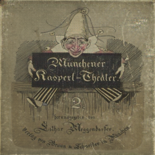
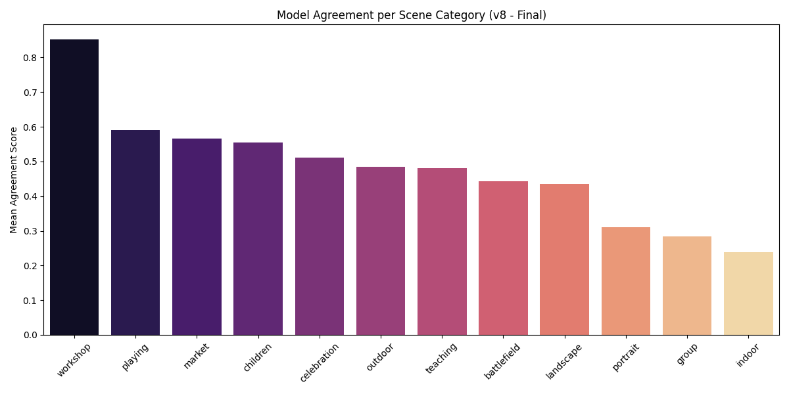

Scene-Aware Agreement (SAA)
A novel cross-model verification metric combining three signals: (1) spatial IoU overlap, (2) CLIP visual embedding similarity of the cropped region, and (3) CLIP textual similarity of the predicted labels. A detection only passes when all three signals agree — actively suppressing hallucinations caused by archival noise and low-fidelity image quality.
Inference Domain Normalization
We forensically restore archive illustrations to a modern visual domain before detection — rather than training on artificially degraded fake-historical data as in Kim, Im & Mandl (2024). The restoration chain: CycleGAN → Real-ESRGAN → Stable Diffusion inpainting.
✅ Normalizes inference, not training.
Empirical Open-Vocab Taxonomy
Instead of imposing COCO-style classes, BLIP-2 free-text descriptions of the archive were mined to discover the 37 most frequent native objects (boy, hat, sack, rooster, sword…). This eliminates human class-selection bias and directly reflects archival reality.
💡 Bias-free semantic discovery.

Pairwise SAA Agreement Heatmap — cross-model consistency between Florence-2, GroundingDINO, and YOLOv11 Student.
Florence-2 ↔ DINO agreement rose by +11.4% after domain normalization. Student surpasses teacher alignment.

Agreement broken down by 5 scene contexts. Landscape scenes show highest confidence — reinforcing the SAA metric's sensitivity to visual context.